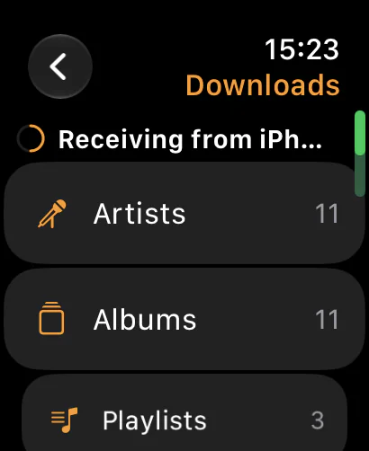

01 / Standalone
Leave the phone. Take the music.
Pinned music lives on the watch and plays from the watch to your Bluetooth headphones. This is real on-device playback, not a remote control that pauses the song playing on a phone in another room.
NaviBeat · watchOS 11+
Download albums to your Watch and go on a run without your phone. Digital Crown adjusts volume. Skip tracks from your wrist. Now Playing with cover art, artist name, and transport controls, always one tap away. One $5.99 Universal Purchase covers every Apple device.

watchOS 11+
Series 7 and later · Ultra · SE 2nd gen
Digital Crown
Volume · no tapping required
Offline downloads
Albums & playlists on-watch
$5.99 once
Universal Purchase · all Apple devices
The short answer
01 / Standalone
Pinned music lives on the watch and plays from the watch to your Bluetooth headphones. This is real on-device playback, not a remote control that pauses the song playing on a phone in another room.
02 / Direct downloads
When the watch can reach your server over Wi-Fi, it fetches the audio directly, which is far faster than pushing every byte across Bluetooth. If the server is unreachable from the watch, NaviBeat falls back to a transfer through the iPhone automatically, and the Download Manager shows the progress either way.
03 / Ships with the phone app
The watchOS app is embedded in the iPhone app and installs automatically when you pair a Watch. It is part of the same $5.99 Universal Purchase that covers iPhone, iPad, Mac, and Apple TV. No subscription, no separate watch app to hunt for.
Out now in 1.4
All of this is out now, in 1.4 on the App Store. The beta carries what comes next, and anyone can join, free.
01 / Now Playing
The cover sits on a card at the top of the screen with nothing written over it, on an ambient colour field taken from the album, and the title and artist sit underneath. The previous player is still there as the second choice: pick Cover card or Full-screen cover in Settings. The proportions were measured against Apple’s own, and the colour field is darkened until white text passes a contrast check, so a bright cover never leaves the words unreadable.
02 / Volume
When the watch is playing to its own headphones, turning the Digital Crown now changes the watch’s volume instead of reaching over to the phone. That is the case this whole app exists for, and it is the one that was wrong.
03 / Storage
The download cap used to be a fixed number. It is a choice now: 2, 4 or 8 GB. A playlist you downloaded to the watch also tops itself up on its own as songs are added to it later, so a running playlist you keep editing stays current on your wrist.
04 / Getting there faster
Starting a song from a browse list used to leave you sitting on the list. It opens Now Playing now.
Every screen
The Watch app was rebuilt around compact, glanceable rows, and it downloads albums and playlists straight from your server, no phone required. On a run, downloaded tracks play directly from the Watch over Bluetooth headphones, with no phone and no connection needed. When the Watch can reach your server it streams the rest of your library too, and a stream that dies partway resumes the same song where it stopped.



Download albums or playlists to your Watch over Wi-Fi, straight from your server. Leave your phone at home. The music plays from local storage directly to Bluetooth headphones.
Run free.
The Digital Crown controls volume during playback. No accidental taps on a sweaty screen, just turn the crown.
Browse Albums and Artists directly from the Watch. Tap into any album for the track list. Tap any track to start playback. The full library in your pocket, and on your wrist.
Tap Download on any album, playlist, or song right on the Watch, and it pulls straight from your server over Wi-Fi while you carry on using it. No charging dock and no scheduled sync required.
Now Playing, Library, and Downloaded sit in compact rows right on the home screen, so you see everything the Watch can do in one glance instead of digging through menus.
Send an album to your Watch from the iPhone app and it downloads by itself, no waiting around. The transfer is tracked the same way as any other download, with a history and one-tap retry if it does not finish.
Long-press any track for Favorite, Rate, Go to Artist, Go to Album, and Download actions. Hearts and ratings sync back to your Navidrome server, and on to Last.fm or ListenBrainz if you have either connected.
Launch price
One purchase. Every device.
Apple Watch, iPhone, Mac, Apple TV, iPad. Forever.
Questions
The Watch app is embedded in the iPhone app, so it installs when your Watch is paired. It runs on watchOS 11 or later, on Apple Watch Series 7 and later, Ultra, and SE 2nd generation.
Yes. NaviBeat supports offline playback from your wrist: download tracks to the Watch and play them untethered from the phone.
NaviBeat is $5.99 USD, one time. It is a Universal Purchase, so that single price covers all five Apple platforms: Apple Watch, iPhone, iPad, Mac, and Apple TV.
NaviBeat is a client, so it connects to your own server. It works with Navidrome v0.50 or later, or any OpenSubsonic-compatible server, including Airsonic-Advanced and Gonic. It does not host or stream any music of its own.